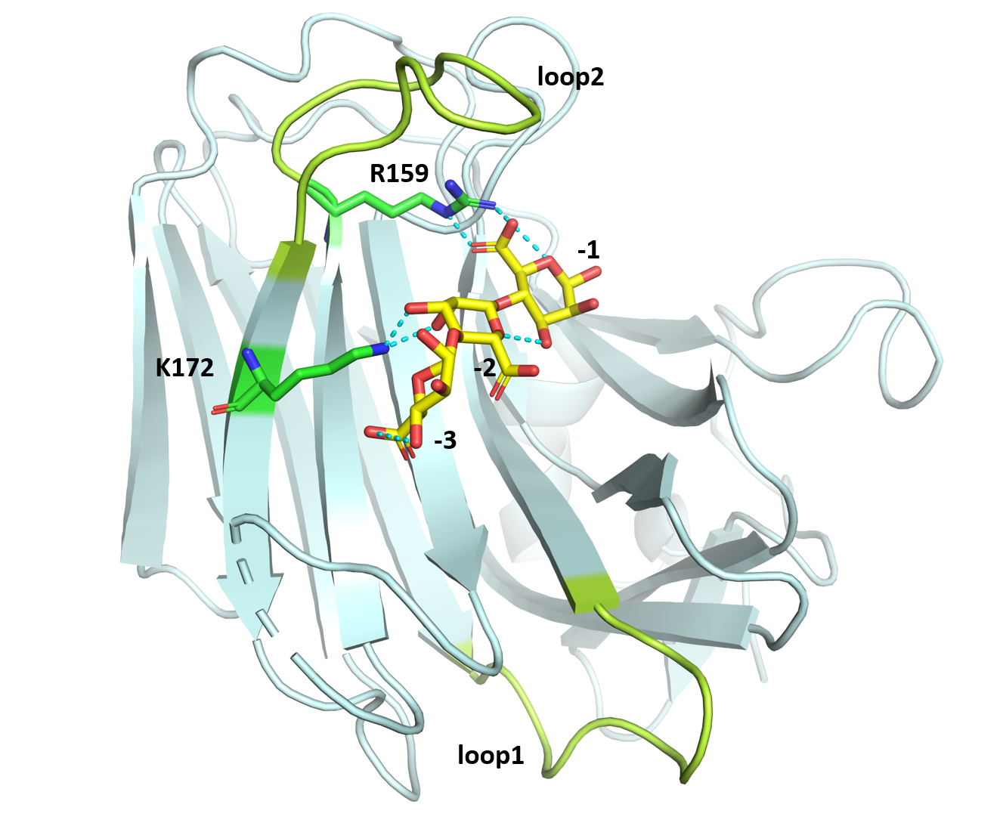
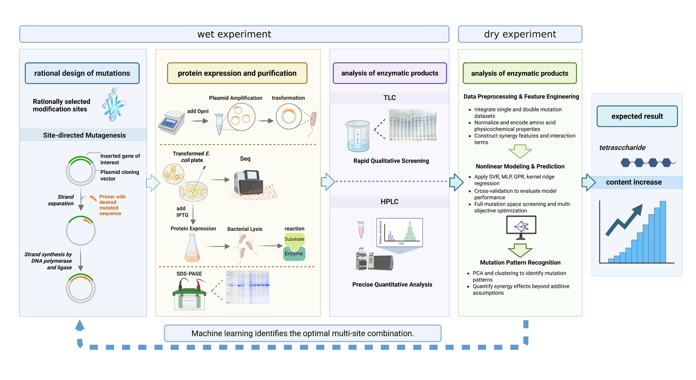

Design
Structure-Guided Semi-Rational Design
The core strategy of the project is not random mutagenesis but rather rational analysis based on the crystal structure of PyAly bound to its substrate (M5) (PDB: 7W18), enabling the precise selection of residues with potential key impacts on product distribution for mutagenesis.
1 Theoretical Basis: Previous study on the crystal structure of PyAly indicates that the “-” section of the substrate-binding pocket, consisting of subsites -1, -2, -3 (Figure 1), plays a decisive role in the distribution of the product, with loop1 (Thr108-Lys117) and loop2 (Arg159-Phe170) dominantly controlling the DP specificity. Alginate lyases with a shorter loop1 are more likely to produce oligosaccharides with higher degrees of polymerization.
2 Design Focus: By adjusting the affinity and hydrogen-bond network between the enzyme and the substrate in the "-" region, the substrate binding mode is altered, thereby steering the reaction towards favoring the generation and release of tetrasaccharides.
Selection of Key Residues
Based on structural analysis, four key residues within the substrate-binding pocket were selected for site-directed saturation mutagenesis:
R143 forms two hydrogen bonds with the C-5 carboxyl group of the sugar at the −3 subsite, which is essential for stabilizing the orientation of the substrate.
K172 forms hydrogen bonds with the hydroxyl groups at the C-2 and C-3 positions of the sugar at the −2 subsite, thereby helping to precisely anchor the substrate.
Mutations at these sites may disrupt or reshape the hydrogen-bonding network, altering substrate positioning and stability, which in turn can shift product distribution and potentially favor the accumulation of tetrasaccharides.
R159 and F170 are located at the two termini of loop2. Although loop2 length itself does not directly determine product specificity, differences in loop2 conformation and sequence are known to modulate the geometry of the substrate-binding pocket. Together with loop1 and loop2, they play a critical role in shaping the enzyme–substrate interaction and influencing product length preference.
Mutations at R159 and F170 may therefore remodel the binding pocket architecture or local charge environment, thereby change the substrate-binding mode and ultimately affect the distribution of oligosac-charide products.
Overall Workflow
This project adopts an iterative cycle workflow combining Wet Lab and Dry Lab experiments (Figure 2).
1 Rational Design and Single-site Mutant Library Construction: Perform site-directed saturation mutagenesis on the four selected residues (R143, R159, F170, K172) individually to construct mutant libraries.
2 Wet Lab Validation and Data Generation: Express and purify mutant enzymes, use TLC for rapid qualitative screening of product distribution, use HPLC for precise quantitative analysis to obtain the tetrasaccharide ratio (DP4%) data for each mutant.
3 Machine Learning Model Training and Prediction:
Data Preprocessing and Feature Engineering: Integrate single-site mutation data and construct a 28-dimensional feature vector including amino acid physicochemical properties, interaction scores, etc.
Model Training: Train a set of nonlinear regression models using single-site data and a small set of constructed double-site mutant data.
Prediction and Optimization: Use the trained models to predict the tetrasaccharide yield for all possible double-site combinations (318 in total) and screen the top 20 optimal candidate combinations through a comprehensive scoring system.
4 Iterative Validation and Model Refinement: Experimentally validate the optimal candidate mutants predicted by machine learning, then feed the new experimental data back into the machine learning model to refine the model and improve the accuracy of the next round of predictions. Repeat this process to gradually approach the optimal solution.
Key Innovations
1 Structure-Guided Target Selection: Avoids blindness and greatly narrows the search space.
2 Machine Learning-Driven Efficient Exploration: Uses small-sample data to predict the effects of a vast number of mutant combinations, significantly reducing experimental workload.
3 Closed-Loop Iterative Optimization System: Establishes a "Design-Build-Test-Learn" cycle, enabling gradual and efficient improvement of enzyme performance.